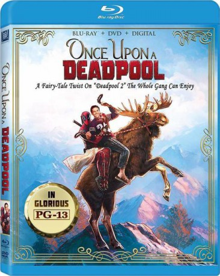

gesehen am 03.02.2019
gesehen am 03.02.2019Alternativ: Once upon a Deadpool gesehen am 03.02.2019
 
 IMDB-Wertung: 7.8 / 10
IMDB-Wertung: 7.8 / 10  Metascore:
Metascore: 
Weihnachtsversion von „Deadpool 2“. Damit auch Kinder in den Genuss seines Abenteuers kommen können, hat sich Deadpool (Ryan Reynolds) etwas ganz Besonderes einfallen lassen. Der vorlaute Söldner entführt Fred Savage (spielt sich selbst), um diesem in bester „Braut des Prinzen“-Manier zu erzählen, was er so erlebt hat, als Cable (Josh Brolin) durch die Zeit gereist ist, um den wütenden Teenager-Mutanten Russell (Julian Dennison) zu ermorden und Deadpool selbst deswegen eine Truppe, die X-Force, aufgebaut hat. Dabei verdreht er die an sich brutale und vulgäre Geschichte so, dass daraus eine familienfreundliche Variante entsteht. Gewalttätige Stellen werden gekürzt und Flüche zensiert. Um die fehlenden Stellen zu kompensieren, enthält „Es war einmal ein Deadpool“ auch Szenen aus dem Super Duper Cut, einer gegenüber der Kinofassung um 15 Minuten längeren Version von „Deadpool 2“.
Jahr: 2018
Dauer: 117 Minuten
FSK: 12
Land: USA Studio: Twentieth Century FoxTonspuren: DD5.1 - ,
Untertitel: Deutsch, Englisch,
Auflösung: 1080p (1920x804) Größe: 7393 MB
Genre: Action, Sci-Fi, Komödie, Abenteuer, Weihnachten
Regisseur: David Leitch
Drehbuch: Rhett Reese, Paul Wernick, Ryan Reynolds, Rob Liefeld, Fabian Nicieza
Soundtrack: Tyler Bates
Darsteller:
 Ryan Reynolds als Wade Wilson / Deadpool / Voice of Juggernaut
Ryan Reynolds als Wade Wilson / Deadpool / Voice of Juggernaut Josh Brolin als Cable
Josh Brolin als Cable Morena Baccarin als Vanessa
Morena Baccarin als Vanessa Zazie Beetz als Domino
Zazie Beetz als Domino T.J. Miller als Weasel
T.J. Miller als Weasel Karan Soni als Dopinder
Karan Soni als Dopinder Jack Kesy als Black Tom
Jack Kesy als Black Tom Eddie Marsan als Headmaster
Eddie Marsan als Headmaster Stefan Kapicic als Voice of Colossus
Stefan Kapicic als Voice of Colossus Randal Reeder als Buck
Randal Reeder als Buck Thayr Harris als Sergei Valishnikov
Thayr Harris als Sergei Valishnikov Rob Delaney als Peter
Rob Delaney als Peter Lewis Tan als Shatterstar
Lewis Tan als Shatterstar Bill Skarsgård als Zeitgeist
Bill Skarsgård als Zeitgeist Terry Crews als Bedlam
Terry Crews als Bedlam Brad Pitt als Vanisher
Brad Pitt als Vanisher Paul Wu als Hong Kong Boss
Paul Wu als Hong Kong Boss Robert Maillet als Sluggo
Robert Maillet als Sluggo Alan Tudyk als Luke - Redneck #1
Alan Tudyk als Luke - Redneck #1 Matt Damon als Redneck #2
Matt Damon als Redneck #2 Michasha Armstrong als Swat Captain (School)
Michasha Armstrong als Swat Captain (School) Mike Dopud als Prison Guard
Mike Dopud als Prison Guard Sala Baker als Older Firefist
Sala Baker als Older Firefist David Leitch als Ground Church Mutant
David Leitch als Ground Church Mutant Nicholas Hoult als Beast (uncredited)
Nicholas Hoult als Beast (uncredited) James McAvoy als Charles Xavier (uncredited)
James McAvoy als Charles Xavier (uncredited) Evan Peters als Quicksilver (uncredited)
Evan Peters als Quicksilver (uncredited) Tye Sheridan als Cyclops (uncredited)
Tye Sheridan als Cyclops (uncredited)Datei: X:\Comic-Filme\Deadpool\Es war einmal ein Deadpool 2 (2018, FSK12, 1920x804).mkv seit 16.01.2019
Festplatte: Comicverfilmungen+MusikCD
 Alle Filme aus Gruppe 'Comic-Filme\Deadpool'
Alle Filme aus Gruppe 'Comic-Filme\Deadpool'